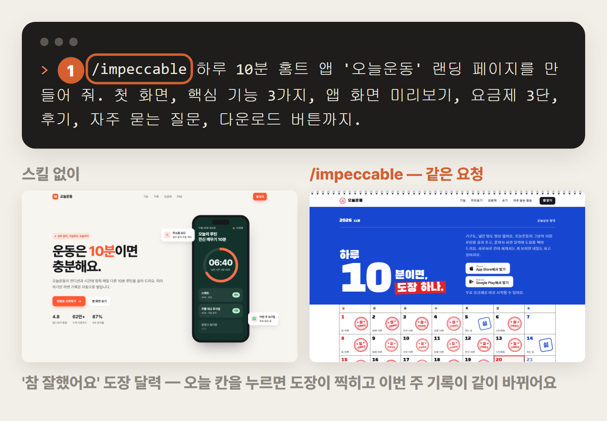
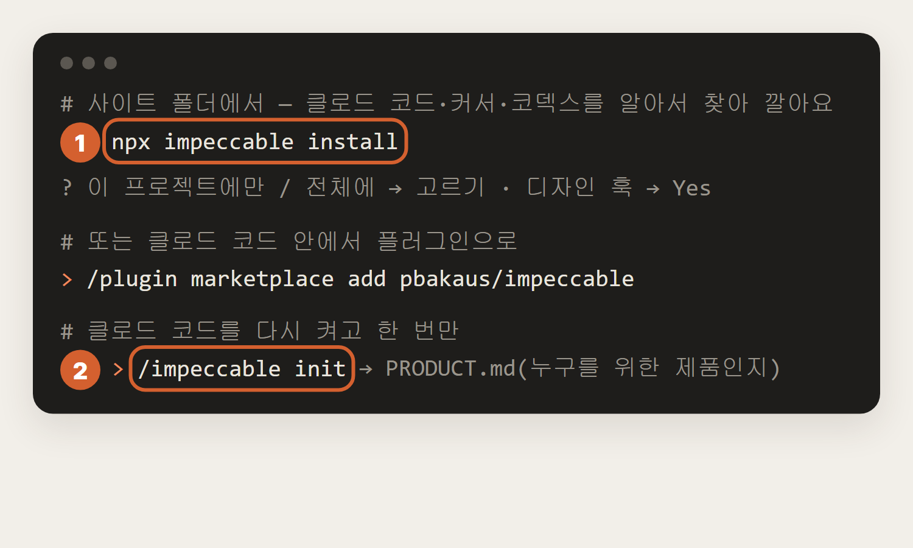
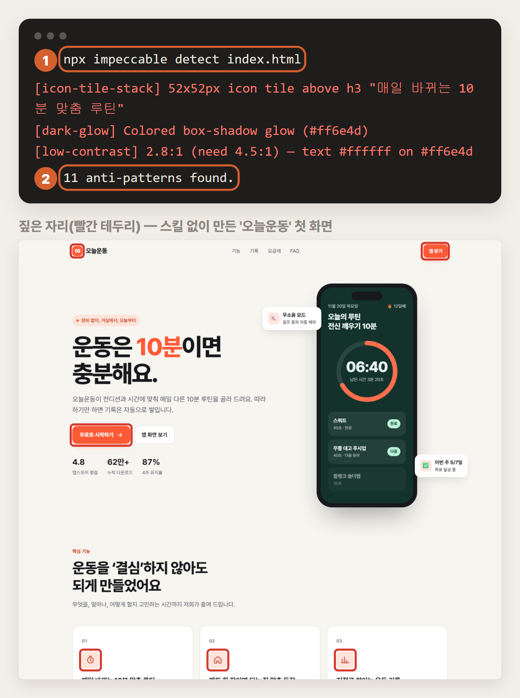
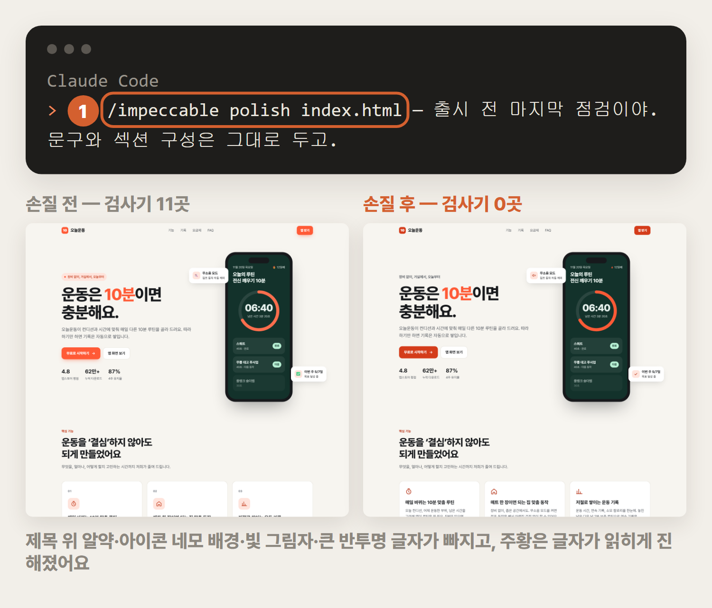
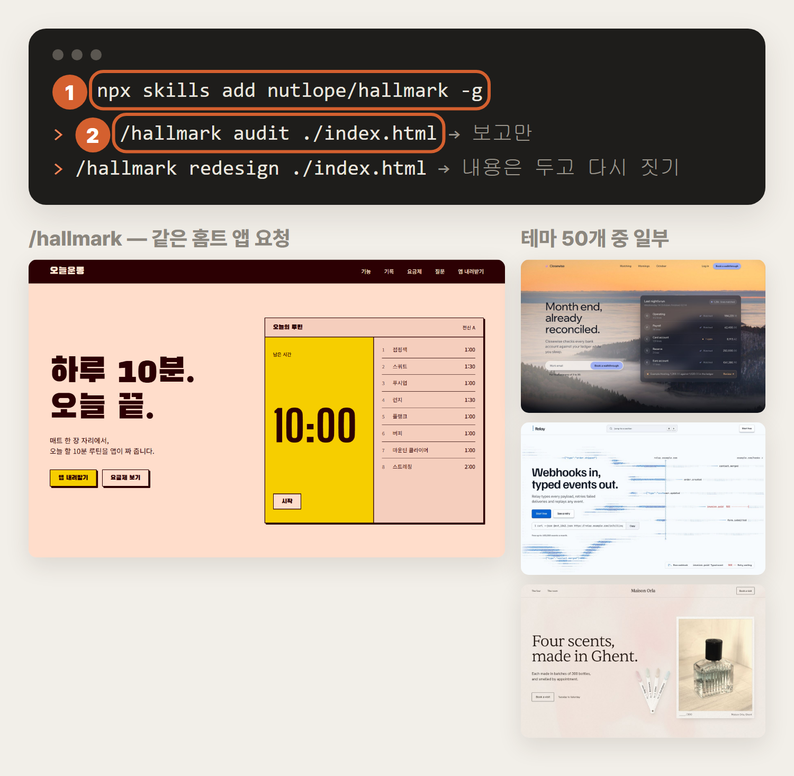

클로드 코드(커서·코덱스 등도)에 붙여 쓰는 디자인 스킬이에요. 이미 만든 사이트는 규칙 62개짜리 검사기로 'AI가 만든 티'가 나는 자리(제목 위 아이콘 네모, 보라 그라데이션, 빛나는 그림자, 글자 대비 등)를 짚고, 문구는 그대로 둔 채 그 자리만 손질해요. 처음부터 맡기면 같은 요청이어도 흔한 틀 대신 그 제품에 맞는 콘셉트로 지어요. 깃허브 공개 오픈소스(Apache-2.0)라 무료예요.

사이트 폴더에서 터미널(윈도는 PowerShell)에 1번을 치면, 깔린 코딩 도구를 찾아서 스킬을 넣어 줘요. '이 프로젝트만/전체'를 고르고, 디자인 훅은 Yes(그래야 AI가 화면을 고칠 때마다 검사기가 자동으로 돌아요). 클로드 코드를 다시 켠 뒤 2번 /impeccable init을 한 번 하면 제품 설명(PRODUCT.md)을 적어 두고 다음부터 그걸 읽어요.

1번처럼 파일·폴더·사이트 주소를 넣으면 AI 티가 난 자리를 줄마다 알려 주고 개수를 세요(2). AI가 보는 게 아니라 규칙 62개라 가입·API 키·돈이 안 들어요. 이 편 예시는 스킬 없이 만든 '오늘운동' 페이지에서 11곳이 나왔어요(빨간 테두리).

클로드 코드에서 /impeccable polish 뒤에 파일을 적어요(1). '문구와 섹션은 그대로'라고 덧붙이면 내용은 두고 AI 티 난 자리만 고쳐요. 이 편에선 8분 걸렸고 검사기 11곳이 0곳이 됐어요. 점수가 궁금하면 critique(사용성 점수), 접근성·폰 화면까지 보려면 audit을 써요.

새로 만들 땐 요청 앞에 /impeccable을 붙여요(1). 흔한 틀 대신 제품에 맞는 콘셉트를 먼저 잡고, 만드는 중에 검사기가 걸리면 다 됐다고 하기 전에 스스로 고쳐요. 이 편에선 '참 잘했어요' 도장 달력 페이지가 나왔어요(20분 정도 걸림).
1번으로 깔고, 이미 만든 페이지는 2번 /hallmark audit로 올리기 전 점검(보고만), redesign은 내용·연결은 두고 다시 지어요. 새로 만들 땐 테마 50개 중 셋을 골라 주고, 실제 브라우저 여러 폭에서 검사해요.

사이트 폴더에서 처음 한 번
npx impeccable install
클로드 코드 안에서
/plugin marketplace add pbakaus/impeccable
올리기 전
npx impeccable detect index.html
이미 올린 사이트
npx impeccable detect https://내사이트주소
문구는 두고 고치기
/impeccable polish index.html — 출시 전 마지막 점검이야. AI가 만든 티가 나는 곳을 찾아서 고쳐 줘. 문구와 섹션 구성은 그대로 두고.
새 사이트
/impeccable 하루 10분 홈트 앱 랜딩 페이지를 만들어 줘. 첫 화면, 핵심 기능 3가지, 앱 화면 미리보기, 요금제 3단, 후기, 자주 묻는 질문, 다운로드 버튼까지. index.html 하나로.
덤
npx skills add nutlope/hallmark -g /hallmark audit ./index.html
도움이 되셨다면
@ai.antenna.kr
에서 바로 쓰는 AI 활용법을 계속 올립니다.